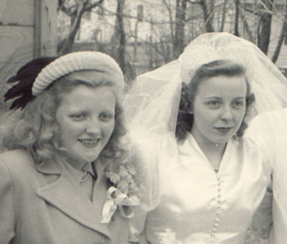

Bonita Beyer
???? - ?
Bonita Neubauer was born to Selma and Harold Neubauer. She married Donald Beyer and together they had five children.

Bonita with her sister Eileen (who had just gotten maried).
Parents:
Selma Anderson
???? - ?
Harold Neubauer ???? - ?
Offspring:
Sally Beyer ???? - ?
Donald Beyer ???? - ?
Nancy Beyer ???? - ?
Virginia Beyer ???? - ?
Lisa Beyer ???? - ?
References:
1. Neal Wogsland
2. Mary Dell Wogsland
Last changed on 25 May 2004 by
Bradley James Wogsland
.